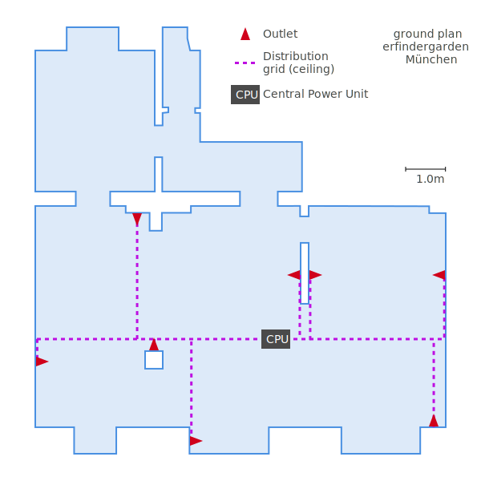

Table of Contents
Note: This design is for an old idea for a final project, where i wanted to create a low-voltage DC power grid in our lab.
2D Overview
Goal: Know where to place everything in the room. Know how much wire is reqired in total.
- Vectorize a ground plan of the shop
- Place outlets
- Place CPU and routes
- Perform some calculations
Software choice
I have been using different programs for 2D drawing in the past. GIMP is open source software for creating and editig raster graphics. It has support for paths, too, but for my purpose i need a vector grahipcs or dedicated CAD program for accurate distances and in order to be easily able to change everything later. Apart from artistic (including photograpy) or scientific purposes, use of raster graphics programs is limited. You almost always want to choose a vector graphics program for any design or technical drawing purposes.
So what are our options for vector graphics programs?
- Inkscape – most fully featured open source program with lots of features and extensions
- Adobe Illustrator – most popular commercial software among professional designers
- Sketch – Very popular among web/app designers (commercial)
- Many more for sure…
Building web apps for a living, i happen to have a license for Sketch already. Generally i would always prefer to use open source software, but Inkscape’s user experience is just so much worse on a Mac than Sketch’s. Thus, it’s not a real option, unless i require any of its special features for a specific task. Main annoyance is scrolling and zooming, which i constantly need when drawing. And it’s really really bad, compared to other “Mac native” drawing apps. Apart from that, there are no prepackaged binaries of the latest build of Inkscape for Mac, so i have to go with an older version. I have it installed, because sometimes there are not much alternatives to using it. But as long as i can, i stay away from it.
1. Vectorize a ground plan of the shop
The scan is a bit skewed so our first task is to transform it in GIMP. We want to have its edges paralell to the image borders and its angles square. First, i put four guide lines (blue dashed lines) onto my original scan, to indicate where the strokes of the drawing should be. Next, i use the perspective transform tool  to align all four corners in the drawing with the intersection points of the guides (red arrows). After adjusting one corner, i check if the other three corners still line up and adjust them in turn, until i’m statisfied with the result. It doesn’t need to be too perfect…
to align all four corners in the drawing with the intersection points of the guides (red arrows). After adjusting one corner, i check if the other three corners still line up and adjust them in turn, until i’m statisfied with the result. It doesn’t need to be too perfect…
Now, export that file as png. The jpeg format is not recommended here, as the drawing might loose sharpness and edges could get fuzzy.
I prefer to vectorize this file manually for the cleaner svg output and as a further “filter” to smoothen out the imprecision of the scan. We could use Inkscape here, but for this simple task, Sketch is totally fine and a bit easier to operate. So i start by adding my aligned png drawing as a layer in a blank Sketch file. Again, i add some guides to help me with the manual tracing.
After that, i start drawing the outer shape of the relevant area in my plan as a  . Then i subtract the interior walls from that. Pretty simple if everything is straight.
. Then i subtract the interior walls from that. Pretty simple if everything is straight.
Finally, i need to take note of the scale. To achieve this, i draw a vector that has a known length in my plan, for example the 3.02m at the bottom of the drawing. Then, i divide the length of that vector by our known 3.02, which gives me a line that represents exactly one meter in our original plan. Label
Last thing i do is hide the background layer, resize the artboard and add a description. Done with the plan so far, now let’s add our components to it!
1px = 1cm. This way, i could have used all measures stated on the scan to create an exact plan in easy-to-convert units. Realized too late, not necessary for now, lesson for next time…
2. Place outlets
I will set the locations of the outlets first, as they depend on our practical needs. The CPU location and wire routes have to be adapted to that.
The red triangle indicates an outlet, but i made it a Symbol so i can change it any time. This way i also keep information about the orientation in the document. 0° is the upwards pointing arrow. -90° points to the left. It is preserved in the svg as an attribute (transform="rotate(-90.000000)") and might be useful in further, possibly automated steps.
The outlets are all placed in a common group called Outlets, which should also facilitate automated processing or evaluation.
3. Place CPU and routes
“CPU” is a stupid acronym for the random term “Central Power Unit”, which basically just means a power supply plus some analog electronics.
Distribution grid means wires at the ceiling, whose task is to distribute the power across the room to where it’s needed – in contrast to the Access grid, which is a set of blank, vertically wall-mount copper strips where our DC can be tapped anywhere over the entire length.

What’s missing now are the routes for the access grid. They go vertically upwards from each outlet to the respective end of the distribution grid - so they’re pretty difficult to depict in our 2D top view. Let’s go 3D!
4. Perform some calculations
SVGGeometryElement.getTotalLength() method. As i will build a small prototype section before installing the entire grid, such a tool is of less importance right now, given my limited time. But i still like the idea and will hopefully come back to it later.3D Components
I want to start with the design of the wall mounts for the access grid with its blank conductors. Everything should be nicely parametrized, so other people can easily adapt the system to their needs. For this reason, and because i know how to work with it already, OpenSCAD will be the tool of my choice in the following steps.
The corresponding code to this section can be found at https://github.com/fabgrid/design
1. Acces Grid: Conductors
First, i will design the conductors as a module that provides the profile of the cross section over a standardized interface. This way, it can easily be swapped out later. This profile will then be used in the next step to determine the shape of the cutouts in the relevant parts of the wall-mount.
“Conductor” API:
A swappable software component needs a standardized interface. A “Conductor”, as we use the term, must be a self-contained, “use-able” openSCAD file with the following module and functions:
ConductorProfile(current): [Module] Draws the profile of a single conductor on the XY-space
conductor_width(): [Function] Returns the X-spread of a single conductor
conductor_height(): [Function] Returns the Y-spread of a single conductor
The current argument to the ConductorProfile module is there to allow the conductor implementation to adjust its profile based on the electrical current that it’s going to be loaded with.
Implementation: L-Conductor
As i currently imagine it, the first version will be made out of copper sheet metal, bent into an L-shape. Here’s what the cross section looks like in openSCAD:
In a different file, i defined a helper module, to extrude any conductor profile into a 3D-shape, and another module that renders a series of them next to each other:
2. Acces Grid: Wall Mounts
Now that i have the shape of my conductors defined in a reusable way, i can now design suitable wall mounts based on that information. I will use the same schema, making the wall-mount a swappable component.
“Wall-Mount” API
The API for that is quite simple: Again, we need an openSCAD file providing a single module WallMount which draws an example of its type. It gets a single $child which is the full profile of the conductors.
And here’s a first design draft:
This model is just a draft, lacking the fitted joints. But it’s already fully parametric and adapts to my conductors config. Shound i decide to use now 6 round wires, instead of 4 L-shaped ones, it automatically adapts:
Optimizations
One thing i need to find a solution for: I want to be able to separately open and render the files containing individual components (eg. LaserWallMount). Currently, they depend on Main.scad passing them the correct options. It would be nice to have everything stored in some kind of global config with known a interface (eg. variable names). This global config could then be used by all components to render with the correct options.
The code would be cleaner if we passed only the ConductorsProfile as child to the WallMount (Main.scad:50), instead of passing both the child and two arguments, width and height. Unfortunately, there is currently no way in openSCAD (without compiling a fork) to programatically retrieve the dimensions of a shape. Therefore, we have to rely on passing hard-coded or calculated values.